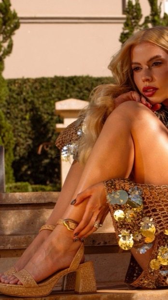
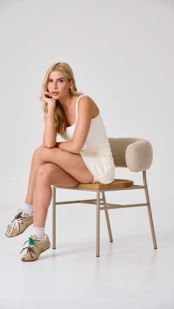
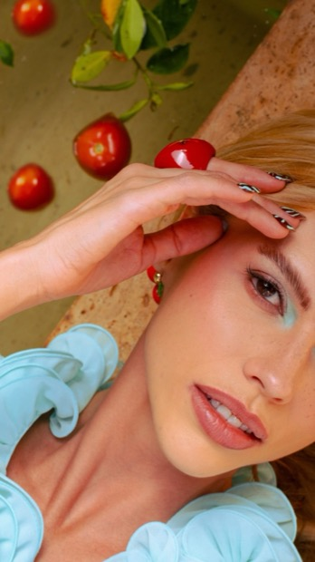
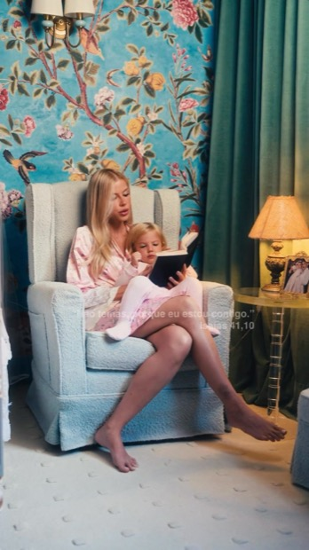

Amanda Arantes · acompanhamento de mídia
Um retrato de setembro antes do fechamento — para você acompanhar enquanto ainda dá tempo de aproveitar o mês.
1 a 14 de setembro de 2026Os 1.355 são seguidores novos, que começaram a seguir no período. O saldo de +984 já desconta quem deixou de seguir no mesmo intervalo — o movimento normal de qualquer perfil desse tamanho.
O número da quinzena
É o custo mais baixo dos últimos quatro meses. Contra a mesma janela de agosto, o seguidor ficou 32% mais barato; contra julho, 44%. E não foi só eficiência: com 40% mais verba, o mês trouxe o dobro de seguidores — 1.355 contra 660.
Sempre do dia 1 ao dia 14, nos três meses, para a comparação ser justa.
| Período | Investimento | Seguidores novos | Custo/seguidor | Alcance |
|---|---|---|---|---|
| 1–14 de setembro/26 | R$ 772 | 1.355 | R$ 0,57 | 94.552 |
| 1–14 de agosto/26 | R$ 550 | 660 | R$ 0,83 | 52.108 |
| 1–14 de julho/26 | R$ 620 | 608 | R$ 1,02 | 66.582 |
Julho é a comparação mais direta em tamanho de verba: com R$ 152 a mais, setembro trouxe 747 seguidores a mais e alcançou 28 mil pessoas a mais.
Até agosto, os vídeos iam ao ar pelo botão “impulsionar” do próprio Instagram. Em setembro passamos a subi-los como campanha montada por fora, com o público e os lugares de exibição escolhidos por nós.
| Mesmo mês, dois jeitos | Investimento | Alcance | Visualizações | Custo por mil |
|---|---|---|---|---|
| Pelo botão “impulsionar” (2 posts) | R$ 177 | 7.645 | 9.442 | R$ 18,76 |
| Campanha montada (5 vídeos) | R$ 365 | 61.195 | 77.900 | R$ 4,68 |
Com o dobro da verba, a campanha montada entregou 8 vezes mais visualizações e alcançou 8 vezes mais gente. Os dois posts no botão foram desligados no dia 10 — é dinheiro que voltou para os vídeos que rendem.
Do dia 1 ao 14. Na semana de 11 a 14 todos rodaram com a mesma verba, para a comparação ser limpa. “Visualizações” são as de pelo menos 3 segundos. Clique em qualquer capa para abrir o post no Instagram.



Os dois marcados como “no ar” são os que seguem rodando. Hot girl o’clock é o que mais prende: de cada 100 pessoas que veem o vídeo começar, 87 ficam nos 3 primeiros segundos, e ele tem o maior número de gente assistindo até o fim. O Soul 70s compra visualização muito barata, mas é o que menos segura quem começou a assistir — por isso saiu da escala. E uma surpresa: o Murau turquesa, que foi um dos maiores virais orgânicos do perfil, foi o mais caro no anúncio. Viral no orgânico nem sempre se repete no pago.
Esta é a outra frente da conta — e é ela que responde pelo custo por seguidor.

R$ 230 investidos · 28.208 pessoas alcançadas · R$ 0,063 por visita ao perfil. É o vídeo que está no ar desde 11 de maio — quatro meses, o mais longevo da conta, e o que mais traz gente nova para o seu perfil.
Ele tem uma vantagem que nenhum outro tem: as 57 mil curtidas acumuladas no post fazem o anúncio ser mais barato de entregar. Por isso ele resiste tanto tempo. Mas já está encarecendo, e é por isso que queremos um sucessor.
Ver no Instagram →As visitas ao perfil vindas de anúncio caíram nesta quinzena (3.638 contra 5.538 em agosto), mas os seguidores dobraram. Ou seja: a conta de “R$ 0,57 por seguidor” não é mérito só da campanha que leva ao perfil.
Boa parte veio do alcance dos vídeos — 94 mil pessoas viram você neste período — e do seu conteúdo orgânico. As duas frentes se alimentam, e é por isso que elas ficam ligadas ao mesmo tempo.
O criativo da campanha de perfil é de maio e está ficando mais caro: a visita ao perfil passou de R$ 0,051 para R$ 0,063. É o desgaste natural de um anúncio que já rodou quatro meses.
Já preparamos um sucessor, mas o Meta mudou a regra do formato de “visita ao perfil” e travou a criação de anúncios novos nesse objetivo. Estamos tratando isso com o suporte — enquanto isso, o anúncio atual segue entregando normalmente.
Projeção para o fechamento
cerca de 2.100 seguidores novosMantido o plano de R$ 1.200 no mês, setembro deve fechar em torno de 2.100 seguidores novos — contra 1.820 em agosto e 1.563 em julho, com investimento parecido. O perfil deve terminar o mês perto de 59,4 mil seguidores.